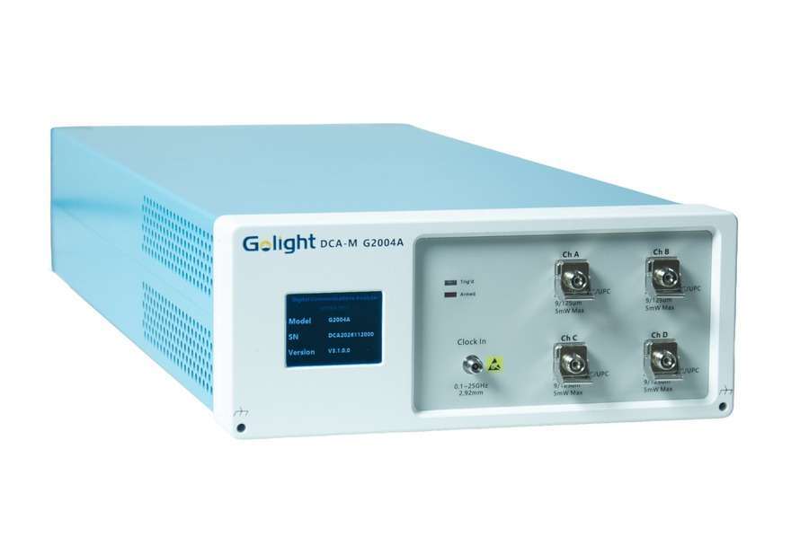

Optical Sampling Oscilloscope · SCPI Remote Programming Reference
This guide is the SCPI remote programming reference for the G2004A optical sampling oscilloscope. The command set follows the SCPI standard. Each command topic documents its command syntax, query syntax, parameters, return values, and a programming example, and provides links to related commands.
The command reference is organized by subsystem in the same way as a standard instrument programming guide: a subsystem topic lists its SCPI command nodes and command groups, and each command has its own topic.

DISPlay = DISP).{ } enclose mutually exclusive choices; angle brackets < > mark a value you supply.? denotes a query.*IDN? / *OPC?)